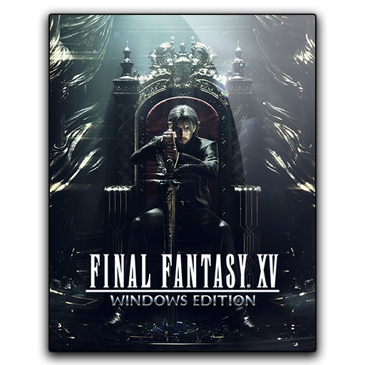

Sejujurnya, arahan seperti ini sudah berkali-kali diusung Need for Speed, maka dari itu developer Ghost Games menerapkan twist menarik pada gameplay-nya. Di siang hari, Anda dapat menjelajahi berbagai lokasi di Palm City dan berpartisipasi di kompetisi Speedhunter Showdown, kemudian mengumpulkan uang buat membeli kendaraan baru serta melakukan modifikasi. Di malam hari, Anda dipersilakan untuk ikut serta dalam ajang balapan liar. Dan di sinilah bagian terunik dari Heat.Need for Speed (sering disingkat NFS/NFD) adalah sebuah seri permainan video balap yang diedarkan oleh Electronic Arts dan dikembangkan oleh perusahaan asal Kanada yang merupakan anak perusahaannya, EA Black Box. Ini adalah seri permainan video balapan yang paling sukses di seluruh dunia, dan merupakan waralaba permainan video balapan paling sukses dalam setiap waktu.
---------------------------------------------------------
Final Fantasy XV[b] is an action role-playing game developed and published by Square Enix as part of the Final Fantasy series. It was released for the PlayStation 4 and Xbox One in 2016, Microsoft Windows in 2018, and Stadia as a launch title in 2019. The game features an open world environment and action-based battle system, incorporating quick-switching weapons, elemental magic, and other features such as vehicle travel and camping. The base campaign was later expanded with downloadable content (DLC), adding